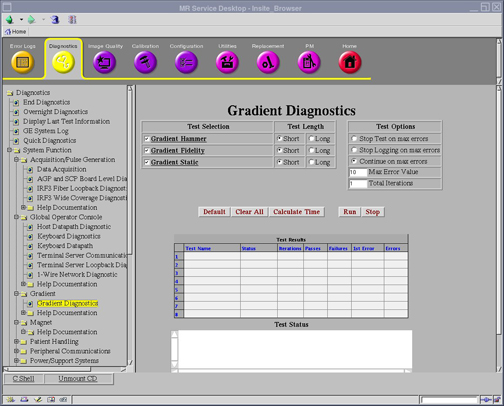

Proprietary to General Electric
Direction 5670000, Rev# 1
Optima MR450w 1.5T Service Methods
Module Version 2.0, Version Date 8/19/08
Proprietary to General Electric |
Diagnostics >> System Function >> Gradient >> Gradient Diagnostics
Diagnostics >> Hardware Location >> PGR Cabinet >> Gradient >> Gradient Diagnostics
Illustration 1: Gradient Diagnostics

The static diagnostic confirms that all reference voltages in XGD hardware are in their normal operating ranges.
Only the PGR cabinet and gradient coil are used in the test.
XGD GMC Board
XGD AUX PWB Enclosure ASM
Gradient Amplifiers
Gradient Power Supplies
Gradient Cables
Gradient Coil
Additionally, the following FRUs can be tested:
Table 1: FRUs in Test
|
|
None
Click [Calculate Time] to get an estimate of the time it will take to run the selected diagnostics.
Static diagnostic executes local reference voltage checks. It commands a range of constant currents with the Gradient Amplifiers disabled and enabled. Various analog signals are monitored. Some signals are monitored for fixed ranges. Other signals are expected to have a linear relationship to commanded current.
Output values are judged PASS or FAIL. In the event of failure, the details of the failure can be found in the GE System Log.
Although, in the case of errors you can click the 1st Error number to see the nature of the error, it is recommended that you view the GE System Log to view all the errors that were recorded.